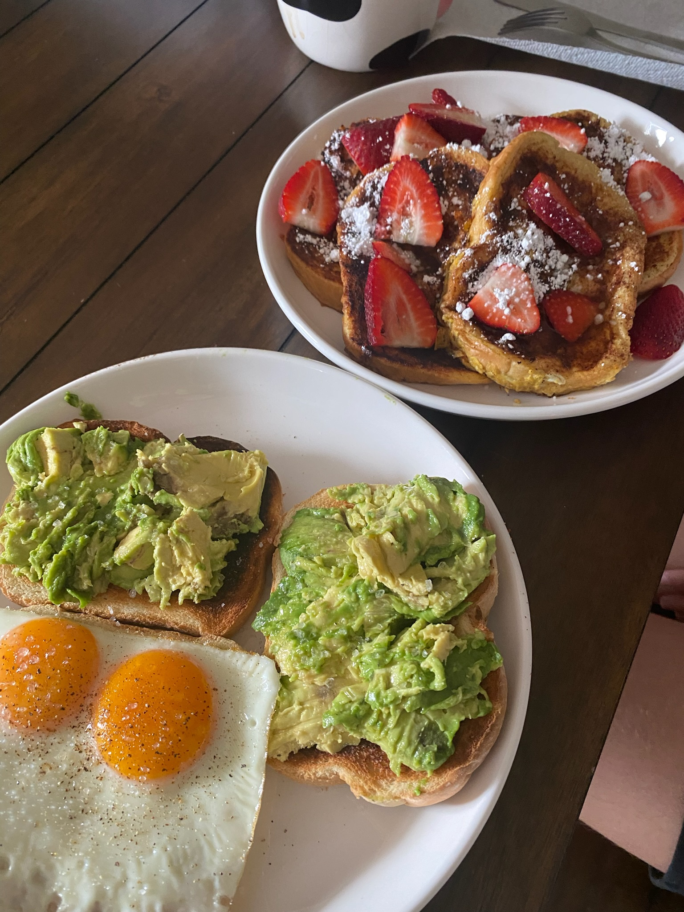

Welcome to Jacob's Recipe book!
Most if not all of these recipes are straight from the mind of the beautiful Taylor Kleinheksel.
Most of these recipes are really, really easy! The other one is just foood to look at and a list of what I put on it lmao.
Here are links to the recipes, in order of easiest to make to hardest.
- Toasts! Avacado and Egg! (Ignore the french variation!
